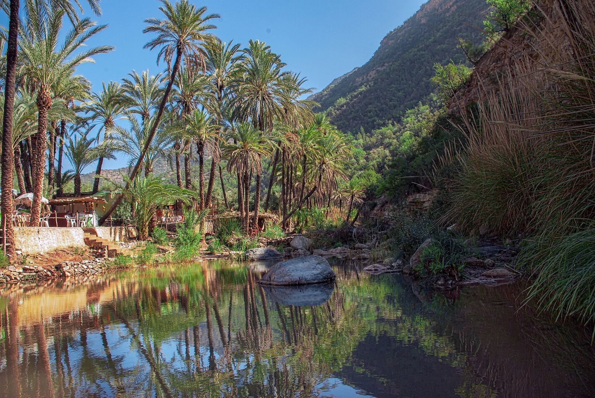
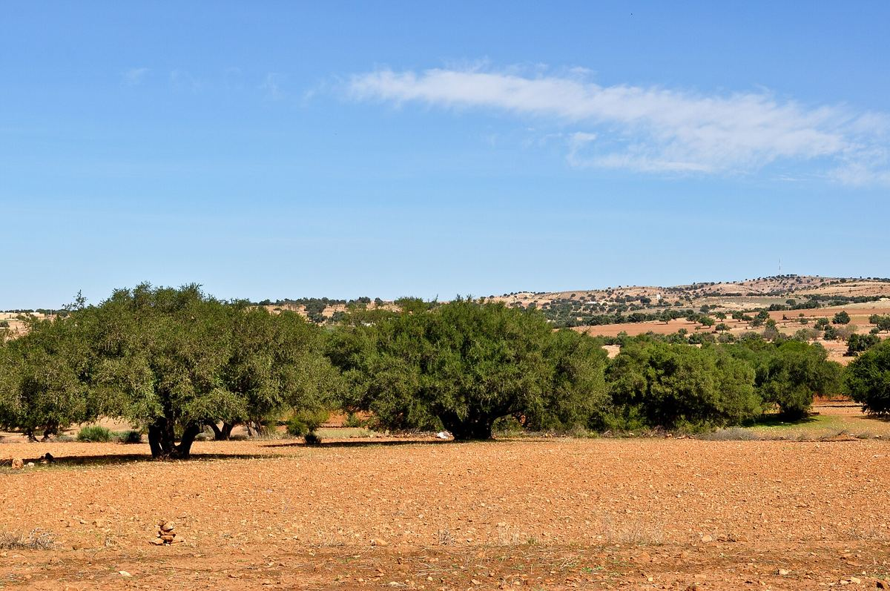
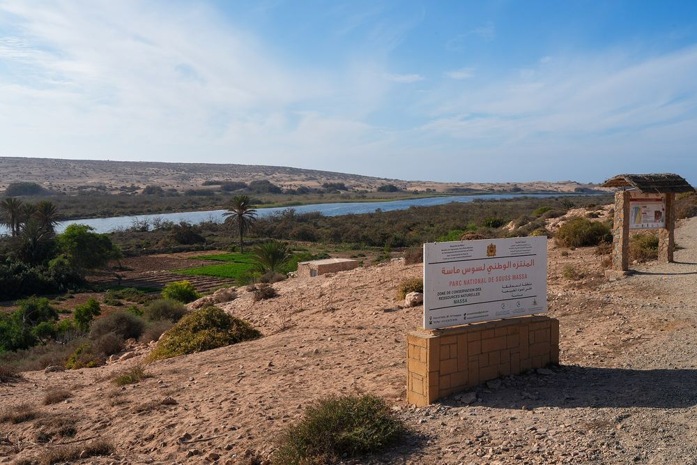

Barbecue Camel Ride
Ride through the Souss river dunes at sunset, then sit down to a Moroccan barbecue back at the ranch. The operator's signature evening.
Home / Excursions / Berber Trekking & Hiking
A full day in Amazigh country — without the crowdsA full-day hike in the Atlas foothills with local Amazigh guides: argan-cooperative breakfast, hidden rock pools for a swim, and none of the Paradise Valley crowds.

Every operator in Agadir sells Paradise Valley. This hike deliberately doesn't. It leaves the famous lakes — and their tour-bus queues — to everyone else and walks the quieter Atlas-foothill paths where Amazigh (Berber) daily life carries on as it always has.
The day starts around 09:00 with hotel pickup and breakfast at an argan oil cooperative, where the region's famous oil is actually pressed. Then it's narrow foothill paths, panoramic photo stops, and a swimming break in hidden natural rock pools the crowds never reach. The theme of the day, in the operator's own words: 100% authentic — rural Morocco and Amazigh daily life.
Pickup from your Agadir hotel and the drive inland into the foothills.
Breakfast at a cooperative where local women press argan oil — taste it where it's made.
Hiking narrow Atlas-foothill paths through Amazigh farmland and villages, with panoramic stops.
A break at hidden natural rock pools — bring swimwear if you fancy the water.
Walk out and transfer back to your hotel.
Walkers with moderate fitness who'd trade the Paradise Valley queues for a genuinely quiet day in Amazigh country. It's a full-day outing, so it suits travellers staying in Agadir rather than cruise passengers on a short call.


Landscape photos on this page show the region and are sourced from Wikimedia Commons — they are not the operator's own tour photos.
The operator hasn't published a price for this tour. Send your date and group size on WhatsApp and you'll get a quote within 24 hours.
It's a full day on narrow foothill paths with some uneven ground — comfortable for regular walkers; the swimming break is optional.
Deliberately not to the famous lakes — the route avoids the crowds and keeps to quieter paths through Amazigh farmland, including hidden rock pools of its own.
More answers on the FAQ page, or just ask on WhatsApp.
Ride through the Souss river dunes at sunset, then sit down to a Moroccan barbecue back at the ranch. The operator's signature evening.

Two hours of pre-Saharan terrain south of Agadir: Berber village tracks, open scrubland and the sand dunes of Tifnit beach. Helmet and goggles provided.